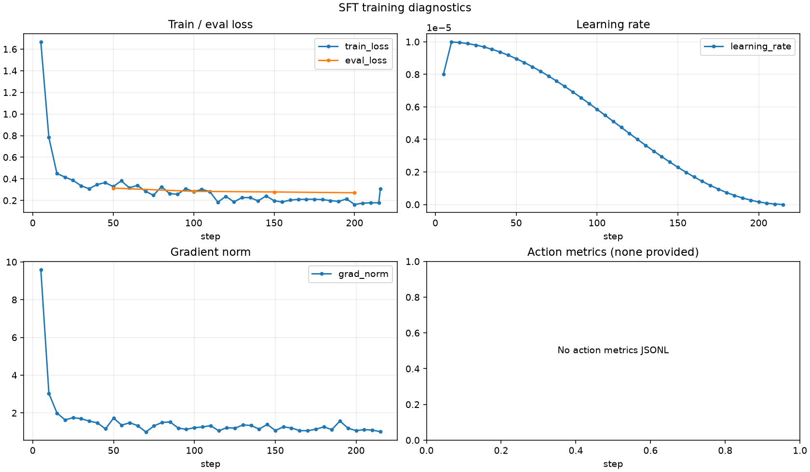

# SFT Training Report This report contains numeric metrics extracted from the trainer log. ## Run overview | Metric | Value | | --- | ---: | | Latest step | 216 / 216 | | Progress | 100.0% | | Latest epoch | 2 | | Train runtime | 2492.6s | | Steps / second | 0.087 | | Estimated remaining | 0.0s |  ## Metric summary | Series | Count | First | Best/min | Latest | | --- | ---: | ---: | ---: | ---: | | train_loss | 44 | 1.6662 | 0.1629 | 0.307056 | | eval_loss | 4 | 0.314097 | 0.271236 | 0.271236 | | learning_rate | 43 | 8e-06 | 2.21668e-09 | 2.21668e-09 | | grad_norm | 43 | 9.59892 | 0.988883 | 1.01127 | ## Action metrics No action metrics were provided.